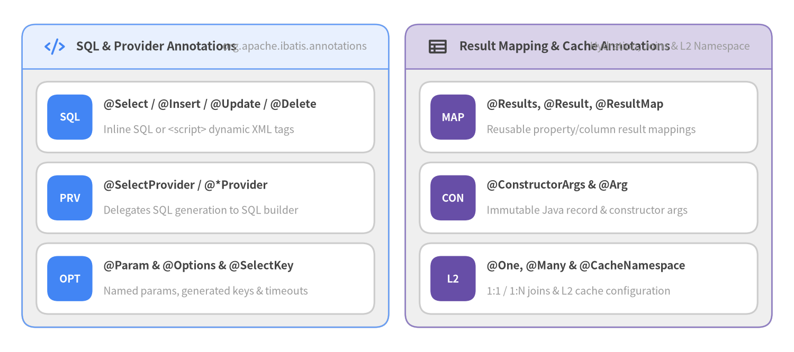

Annotations & SQL Builder
宣言的 Java マッパーアノテーション (org.apache.ibatis.annotations, 全 39 ファイル) およびプログラマティック SQL ビルダ／JDBC ユーティリティ (org.apache.ibatis.jdbc, 全 13 ファイル) のリファレンスです。

Source Code
from drawlib.canvas import save, setup
from drawlib.icons import phosphor
from drawlib.smartarts import CardList, Panel
from drawlib.styles import Colors, Styles
setup(width=144, height=64, dpi=150)
white_card = Styles.Neutral.patch(shape_fill_color=Colors.White)
left_panel = Panel(
"SQL & Provider Annotations",
"org.apache.ibatis.annotations",
style=Styles.Neutral,
header_style=Styles.PrimaryNeutral.patch(shape_line_width=1.2),
text_style=Styles.DarkBold.patch(text_size=10.8),
description_style=Styles.Muted.patch(text_size=9.5),
icon=phosphor.code,
icon_style=Styles.PrimaryBold,
header_variant="filled",
header_height=8.0,
)
left_panel.draw((4.0, 4.5), width=66.5, height=55.0, align="bottom_left")
l_xy, l_w, l_h = left_panel.get_content_box((4.0, 4.5), width=66.5, height=55.0, padding=(2.6, 2.4), align="bottom_left")
sql_cards = CardList(
style=white_card,
text_style=Styles.DarkBold.patch(text_size=10.0),
description_style=Styles.Muted.patch(text_size=9.4),
badge_shape="rounded_rect",
badge_style=Styles.PrimaryFlat,
badge_text_style=Styles.WhiteBold.patch(text_size=9.5),
direction="vertical",
spacing=1.8,
)
sql_cards.add("@Select / @Insert / @Update / @Delete", "Inline SQL or <script> dynamic XML tags", badge_text="SQL")
sql_cards.add("@SelectProvider / @*Provider", "Delegates SQL generation to SQL builder", badge_text="PRV")
sql_cards.add("@Param & @Options & @SelectKey", "Named params, generated keys & timeouts", badge_text="OPT")
sql_cards.draw(l_xy, width=l_w, height=l_h, align="bottom_left")
right_panel = Panel(
"Result Mapping & Cache Annotations",
"Hydration, Joins & L2 Namespace",
style=Styles.Neutral,
header_style=Styles.SecondaryNeutral.patch(shape_line_width=1.2),
text_style=Styles.DarkBold.patch(text_size=10.8),
description_style=Styles.Muted.patch(text_size=9.5),
icon=phosphor.table,
icon_style=Styles.DarkBold,
header_variant="filled",
header_height=8.0,
)
right_panel.draw((73.5, 4.5), width=66.5, height=55.0, align="bottom_left")
r_xy, r_w, r_h = right_panel.get_content_box((73.5, 4.5), width=66.5, height=55.0, padding=(2.6, 2.4), align="bottom_left")
map_cards = CardList(
style=white_card,
text_style=Styles.DarkBold.patch(text_size=10.0),
description_style=Styles.Muted.patch(text_size=9.4),
badge_shape="rounded_rect",
badge_style=Styles.SecondaryFlat,
badge_text_style=Styles.WhiteBold.patch(text_size=9.5),
direction="vertical",
spacing=1.8,
)
map_cards.add("@Results, @Result, @ResultMap", "Reusable property/column result mappings", badge_text="MAP")
map_cards.add("@ConstructorArgs & @Arg", "Immutable Java record & constructor args", badge_text="CON")
map_cards.add("@One, @Many & @CacheNamespace", "1:1 / 1:N joins & L2 cache configuration", badge_text="L2")
map_cards.draw(r_xy, width=r_w, height=l_h, align="bottom_left")
save()
annotation @Select / @Insert / @Update / @Delete#
マッパーインターフェースのメソッド上に直接 SQL 文を宣言します (org.apache.ibatis.annotations.Select, Insert, Update, Delete)。String[] value()（空白で結合）および String databaseId() default "" を受け取ります。<script>...</script> で囲むと <if> や <foreach> 等の動的 SQL タグを使用できます。
@Select({
"SELECT id, email, status, created_at",
"FROM users",
"WHERE id = #{id}"
})
Optional<User> findById(@Param("id") long id);
annotation @Param#
#{name} プレースホルダや OGNL 条件式 <if test="name != null"> から参照するための明示的なパラメータ名を付与します (org.apache.ibatis.annotations.Param)。引数が2つ以上あるメソッドでは必須です。
annotation @Options#
XML の <select> / <insert> 属性に相当するステートメント単位の実行オプション (org.apache.ibatis.annotations.Options) を指定します。
| 属性名 | 型 | デフォルト値 | 説明 |
|---|---|---|---|
useGeneratedKeys |
boolean |
false |
INSERT / UPDATE で JDBC getGeneratedKeys() (Jdbc3KeyGenerator) を有効化します。 |
keyProperty |
String |
"" |
自動生成キーを格納する Java プロパティ名（例: "id"、カンマ区切り可）。 |
keyColumn |
String |
"" |
自動生成キーを持つ DB カラム名（PostgreSQL 等で先頭カラム以外の場合に指定）。 |
useCache |
boolean |
true |
この SELECT で L2 キャッシュを使用するかどうかを制御します。 |
flushCache |
FlushCachePolicy |
DEFAULT |
実行時の L1/L2 キャッシュクリア動作（DEFAULT, TRUE, FALSE）。 |
fetchSize |
int |
-1 |
JDBC Statement.setFetchSize(行数) ヒント。 |
timeout |
int |
-1 |
JDBC Statement.setQueryTimeout(秒) タイムアウト値。 |
resultSetType |
ResultSetType |
DEFAULT |
FORWARD_ONLY, SCROLL_INSENSITIVE, SCROLL_SENSITIVE。 |
statementType |
StatementType |
PREPARED |
STATEMENT, PREPARED（デフォルト）, CALLABLE（ストアドプロシージャ）。 |
annotation @Results & @Result & @ResultMap#
メソッド上でカラムとプロパティのマッピング (org.apache.ibatis.annotations.Results, Result, ResultMap) を定義します。@Results(id = "userResultMap", ...) のように id を付与すると、Configuration に再利用可能な ResultMap として登録され、他メソッドから @ResultMap("userResultMap") で参照できます。
@Result 属性 |
型 | デフォルト値 | 説明 |
|---|---|---|---|
id |
boolean |
false |
主キーカラムであることを示します（JOIN 集約時の CacheKey 計算を高速化）。 |
column |
String |
"" |
DB カラム名またはエイリアス（複合キー時は "{id=user_id,status=status}"）。 |
property |
String |
"" |
マッピング先の Java プロパティ名。 |
javaType |
Class<?> |
void.class |
明示的な Java 型クラス。 |
jdbcType |
JdbcType |
UNDEFINED |
明示的な JDBC 型（JdbcType.VARCHAR, JdbcType.TIMESTAMP 等）。 |
typeHandler |
Class<? extends TypeHandler> |
UnknownTypeHandler.class |
カスタム TypeHandler 実装クラス。 |
one |
@One |
@One |
ネストされた 1:1 関連（select = "..." または resultMap = "...", fetchType）。 |
many |
@Many |
@Many |
ネストされた 1:N コレクション（select = "..." または resultMap = "...", fetchType）。 |
annotation @ConstructorArgs & @Arg#
ResultSet のカラムをコンストラクタ引数に直接マッピングします (org.apache.ibatis.annotations.ConstructorArgs, Arg)。セッターを持たない不変ドメインオブジェクトや Java record クラスの構築に最適です。
annotation @One & @Many#
@Result 内で 1:1 (@One) および 1:N (@Many) の関連マッピングを定義します。
select: 別クエリを実行するステートメント ID ("com.example.OrderMapper.findByUserId")。resultMap: 単一 JOIN クエリの結果をマッピングする既存ResultMapの ID。columnPrefix: ネストResultMapに適用するカラム接頭辞 ("ord_")。fetchType:FetchType.LAZY（遅延ロード）、FetchType.EAGER（即時ロード）、FetchType.DEFAULT。
annotation @SelectKey#
シーケンス等を用いる DB 向けに、INSERT の前後でキー取得 SQL を実行します (org.apache.ibatis.annotations.SelectKey, XML の <selectKey> 相当: statement, keyProperty, keyColumn, before = true|false, resultType)。
annotation @SelectProvider / @InsertProvider / @UpdateProvider / @DeleteProvider#
Java のプロバイダクラス (type / value) とメソッド (method、または ProviderMethodResolver 実装時は同名メソッド) に動的 SQL 構築を委譲します。
@SelectProvider(type = UserSqlProvider.class, method = "buildFindUsers")
List<User> findUsers(@Param("status") String status, @Param("emailLike") String emailLike);
annotation @CacheNamespace & @CacheNamespaceRef#
マッパーインターフェースの名前空間に対して L2 キャッシュを有効化・設定します (org.apache.ibatis.annotations.CacheNamespace): implementation, eviction = LruCache.class, flushInterval, size = 1024, readWrite = true (SerializedCache 使用), blocking = false。別マッパーとキャッシュを共有する場合は @CacheNamespaceRef を使用します。
classSQL#
@SelectProvider 等で安全に動的 SQL を組み立てるための流れるような（Fluent）ビルダークラス (org.apache.ibatis.jdbc.SQL extends AbstractSQL<SQL>) です。WHERE 句の先頭 AND/OR や SET 句の末尾カンマを自動整形します。
String sql = new SQL()
.SELECT("u.id", "u.email", "u.status")
.FROM("users u")
.WHERE("u.active = #{active}")
.applyIf(email != null, s -> s.WHERE("u.email LIKE #{email}"))
.ORDER_BY("u.id DESC")
.OFFSET_ROWS("#{offset}")
.FETCH_FIRST_ROWS_ONLY("#{limit}")
.toString();
classScriptRunner & SqlRunner#
org.apache.ibatis.jdbc パッケージの軽量 JDBC ユーティリティです。
ScriptRunner: DDL / シード SQL スクリプト (Reader) を実行します（BaseDataTestの HSQLDB / Derby / H2 初期化でも使用）。SqlRunner: 生のjava.sql.Connectionに対して単発のselectOne/selectAll/insert/update/deleteを実行し、Map<String, Object>を返します。